Тренди 2027
Тренди вебдизайну 2027: п’ять напрямків і що з них брати малому бізнесу
Перед новим роком усі оголошують тренди. Ми зібрали виразні сайти, здебільшого відзначені у 2023–2026 роках, почитали дослідників, дизайнерські огляди й розповіді самих студій та розклали все на п’ять напрямків. Біля кожного стоїть наша оцінка для малого бізнесу: брати, придивитися чи пропустити.
Це прогноз, а не правило. Рік біля прикладу показує, коли сайт отримав відзнаку або коли про нього писали: частина прийомів з’явилася раніше й переходить у 2027-й.

1. Намальоване руками
Коли гладку картинку може за хвилину зробити програма, помітнішим стає те, у чому видно людську руку. Nielsen Norman Group у квітні 2026 року назвала рукотворний вигляд новим сигналом довіри. Envato повідомляє, що наприкінці 2026 року пошуки мальованих вручну матеріалів на її платформі зросли на 25%.
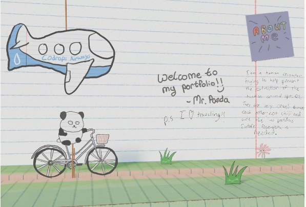


Бізнесу не потрібен цілий мальований світ. Почніть із малого: власні ілюстрації, підпис від руки, живі фото своєї команди та місця. Пам’ятайте й про застереження Nielsen Norman Group: теплий вигляд не повинен приховувати, чим насправді є продукт. Це оцінка експертів на прикладах, а не результат експерименту. Ми самі зробили свій сайт олівцем, тож тут не зовсім неупереджені.
Вердикт: брати. Один свій впізнаваний стиль цінніший за готовий шаблон.
2. Великий виразний шрифт
Заголовок на пів екрана сам стає картинкою. Агенція Webyansh переглянула головні сторінки 75 сайтів з Awwwards і 75 сайтів програмних сервісів: літери від 80 пікселів на першому екрані мали 41% перших і 19% других. Вибірка невелика, але напрям помітний.
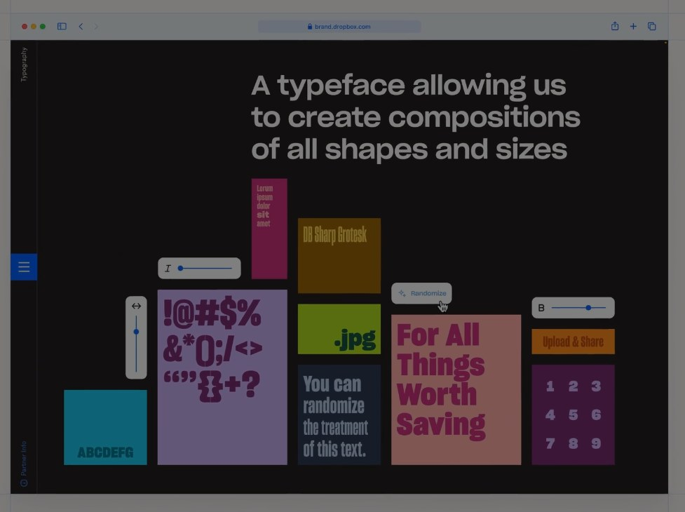


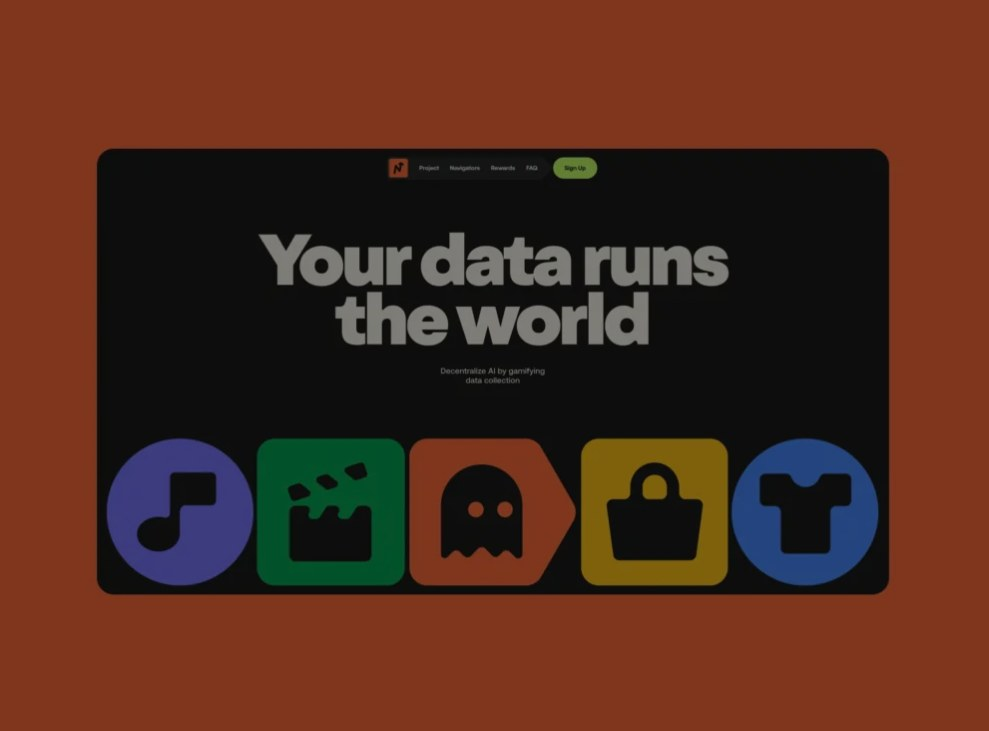
Великий шрифт працює, коли фраза коротка й говорить, що ви пропонуєте. Робіть заголовок справжнім текстом, а не картинкою: тоді його прочитають пошуковик і програма, що озвучує сторінку.
Вердикт: брати. Це недорогий спосіб виглядати сучасно, якщо є що сказати одним реченням.
3. Рух, що пояснює
Анімація корисна, коли показує, як щось влаштоване або куди дивитися далі. Бібліотека anime.js на своєму сайті «розбирає» механізм на деталі, і кожна підписана назвою можливості.
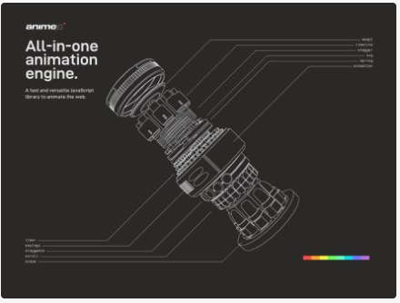
Webyansh радить брати рух із зрозумілою метою, а власні курсори миші на ділових сайтах оминати. Ще одне правило: якщо людина вимкнула анімацію в налаштуваннях пристрою, сайт має це врахувати.
Вердикт: брати потроху. Одна анімація, яка пояснює ваш товар, краща за десять прикрас.
4. Фото й відео на весь екран
Тут сайт говорить кадром: обличчя, жест, предмет зблизька. Тексту мало, а настрій зрозумілий одразу.
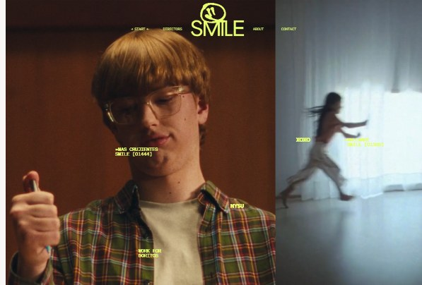
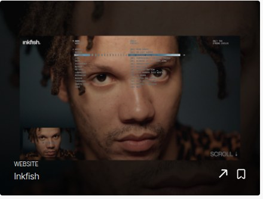
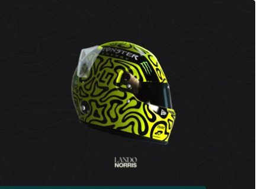
Прийом тримається на якості зйомки. Стокові кадри на весь екран виглядають чужими, а важке відео гальмує сторінку на телефоні.
Вердикт: придивитися. Беріть, якщо маєте власні добрі кадри й перевірили швидкість на звичайному телефоні.
5. Тривимірні та ігрові світи
Найвидовищніша група: сайтом гуляють, крутять предмети, іноді грають. Показовий приклад Oryzo: це сайт вигаданої коркової підставки під чашку, яким студія Lusion демонструє свою майстерність.
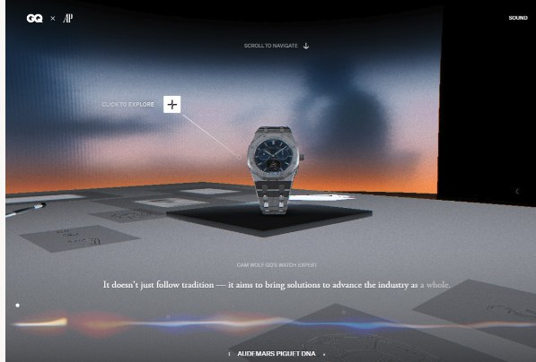
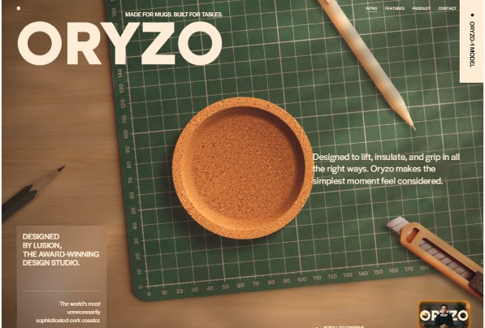
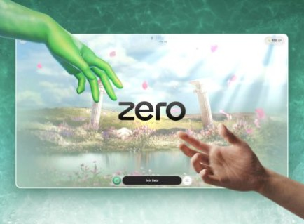
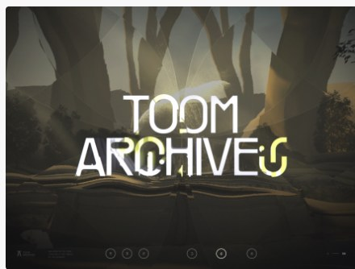
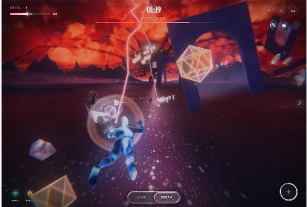
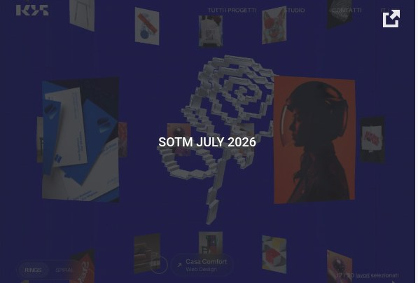
За даними Webyansh, мобільні сторінки з популярною тривимірною бібліотекою Three.js мають медіанну вагу 4,47 МБ проти 2,56 МБ по всіх сайтах, а оцінку швидкодії 34 проти 48. Винятком може бути товар, який покупцеві справді треба покрутити чи налаштувати.
Вердикт: пропустити. Малому бізнесу це зазвичай дорого й важко. Пробуйте лише для показу товару в обсязі.
Що розповідають самі студії
Ми прочитали, як автори кількох із цих сайтів пояснюють свою роботу. Бюджети в них інші, але уроки годяться й для скромного сайту.
- Спочатку зміст, потім ефект. У розповіді про годинникову лабораторію Immersive Garden відмовляється від тривимірності заради неї самої: техніка має відступати перед історією. Resn свій складний продукт пояснила через сюжет і героя-провідника замість термінів.
- Стриманість. Lusion пише, що для Oryzo навмисно приглушила ефектні рухи, щоб не перевантажити людину. На думку студії, відчуття дорогої роботи з’являється, коли всі розділи належать до одного світу.
- Телефон із першого дня. BUNQ LABS перевіряла Why Zero на бюджетному Android чотирирічної давності, і цей телефон міг забракувати рішення. Immersive Garden теж зважала на мобільні від самого початку.
- Вага. Вихідні тривимірні сцени Why Zero важили близько 1,5 ГБ, а готовий сайт близько 10 МБ. Автори сайту Yamê стисканням моделей і текстур вклалися менш ніж у 7 МБ. В Inkfish відео на картках робіт завантажується лише при наведенні, а для телефонів є окремі версії.
- Спочатку спроби. Команда DashDigital перебрала кілька концепцій, перш ніж обрати одну для Inkfish. BUNQ LABS отримала проєкт Why Zero завдяки робочому прототипу, зібраному за 48 годин.
- ШІ вміє не все. В Immersive Garden ранні згенеровані зображення виходили надто нерівними, тож більшість фінальної роботи зроблено традиційними засобами.
Для малого бізнесу це означає просте: спершу визначте, що людина має зрозуміти, покажіть чернетку, перевірте її на недорогому телефоні й лише тоді додавайте прикраси.
Чого не видно на картинках
- Доступність. У ЄС вимоги доступності для низки цифрових товарів і послуг діють із 28 червня 2025 року. Чи стосуються вони вас, перевірте окремо.
- Швидкість. За даними Web Almanac 2025, які наводить Webyansh, основні показники якості сторінки від Google проходять лише 48% мобільних сайтів.
- ШІ-помічники. Вони вже користуються сайтами за людей. Nielsen Norman Group радить чіткі підписи кнопок, передбачувану навігацію та правильну структуру сторінки.
Коротко
- Брати: свій рукотворний стиль і великий зрозумілий заголовок.
- Брати потроху: рух, який щось пояснює.
- Придивитися: фото й відео на весь екран.
- Пропустити: тривимірні світи без потреби.
Сайти-переможці роблять, щоб вразити. Ваш сайт має допомогти людині зрозуміти пропозицію й зв’язатися з вами. Приклади наведено для розбору, права на зображення належать їхнім авторам. Якщо ви власник зображення й хочете, щоб ми його прибрали, напишіть нам.
Давайте розберемо ваш випадок
Розкажіть, чим заробляєте. А ми намалюємо ескіз додатка для вашої справи, без дзвінків і зобов’язань.